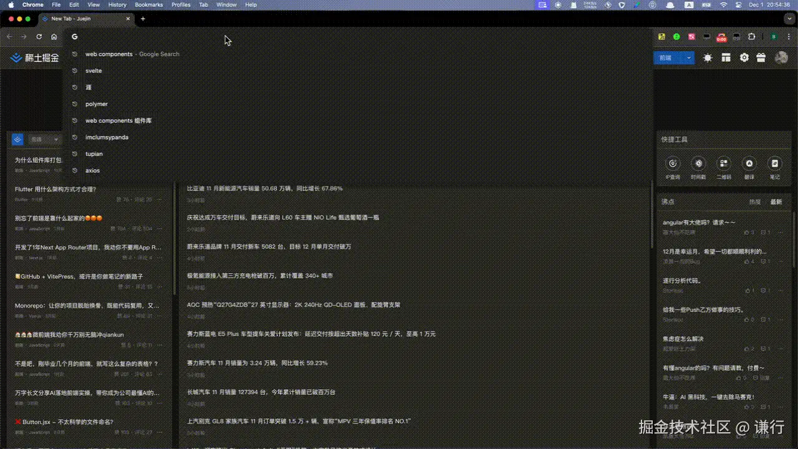

在大部分场景预加载是页面性能优化的利器，而对于类似首页这种承担用户第一次访问的页面却无法使用预加载，这时候我们可以用 Stale-While-Revalidate 加速页面访问，策略分 3 步
- 在收到页面请求时首先检查缓存，如果命中缓存就直接从缓存中返回给用户
- 将缓存返回用户的同时，在后台异步发起网络请求，尝试获取资源的最新版本
- 获取成功后更新缓存，下次使用
而这一切的幕后功臣便是 Service Worker，作为一个后台代理在网络与缓存之间搭建桥梁，提供了丰富的缓存管理和资源控制能力，从而实现这一高效策略
为了实现这一策略，需要首先了解一下 Service Worker 的核心 API
Service 基础概念
Service Worker 基础概念可以在这里了解
此处为语雀内容卡片，点击链接查看：www.yuque.com/sunluyong/f…
拦截修改 Response 对象
使用 event.respondWith 可以在 fetch 事件中拦截网络请求并提供自定义响应，一旦调用浏览器会等待提供的 Promise 解析，并将其结果作为响应返回给发起请求的代码
self.addEventListener("fetch", (event) => {
event
.respondWith
/* 自定义响应逻辑 */
();
});
比如实现拦截特定请求，可以首先尝试从缓存中获取资源，如果缓存命中则返回缓存内容，否则从网络获取资源并缓存
self.addEventListener("fetch", (event) => {
// 过滤非页面请求
const url = new URL(event.request.url);
if (!url.pathname.startsWith("/page/")) return;
event.respondWith(
caches
.match(event.request) // 尝试匹配缓存
.then((cachedResponse) => {
if (cachedResponse) {
return cachedResponse; // 缓存命中，返回缓存内容
}
// 缓存未命中，从网络获取
return fetch(event.request);
})
);
});
必须在 fetch 事件监听器内部的第一时间调用 event.respondWith，否则浏览器将继续使用默认的网络请求处理方式
clone Response 对象缓存
在 Service Worker 中处理网络请求和缓存时，经常会遇到需要 clone 响应对象
const responseToCache = networkResponse.clone();
这是由于 Response 对象是一个可读流，而流具有以下特性
- 单次消费：Streams 在被消费后就会关闭，不能重新读取
- 节省资源：适合处理大型数据，如视频流、文件下载等
当读取 Response 的 body 返回给浏览器后，Stream 会被读取并关闭，之后无法再次读取用于缓存。通过 clone Response 对象，可以创建一个独立的副本，确保每个副本的 Stream 都可单独消费
fetch(event.request).then((networkResponse) => {
// 克隆响应用于缓存
const responseToCache = networkResponse.clone();
// 返回给客户端
event.respondWith(networkResponse);
// 缓存克隆的响应
caches.open(CACHE_NAME).then((cache) => {
cache.put(event.request, responseToCache);
});
});
event.waitUntil 确保异步任务完成
Service Worker 事件都是异步的，浏览器可能在这些异步操作完成之前终止 Service Worker，导致关键任务（如缓存资源或清理旧缓存）无法正确完成
通过调用 event.waitUntil(promise)，可以告诉浏览器要“等待”某个 Promise 完成之后，才认为事件处理完成，这确保了浏览器不会在关键异步操作完成之前终止 Service Worker
比如在激活阶段，通常需要清理旧的缓存
self.addEventListener("activate", (event) => {
console.log("[Service Worker] Activate Event");
const cacheWhitelist = ["my-cache-v2"];
caches.keys().then((cacheNames) => {
return Promise.all(
cacheNames.map((cacheName) => {
if (!cacheWhitelist.includes(cacheName)) {
console.log(`[Service Worker] Deleting old cache: ${cacheName}`);
return caches.delete(cacheName);
}
})
);
});
});
浏览器可能在异步缓存清理任务完成之前终止激活过程，导致旧缓存可能未被正确删除，使用 event.waitUntil 可以确保所有清理操作完成
self.addEventListener("activate", (event) => {
console.log("[Service Worker] Activate Event");
const cacheWhitelist = ["my-cache-v2"];
event.waitUntil(
caches.keys().then((cacheNames) => {
return Promise.all(
cacheNames.map((cacheName) => {
if (!cacheWhitelist.includes(cacheName)) {
console.log(`[Service Worker] Deleting old cache: ${cacheName}`);
return caches.delete(cacheName);
}
})
);
})
);
});
Stale-While-Revalidate 实现
1. 创建目录结构
.
├── app
│ └── index.js
├── package.json
└── public
├── favicon.ico
├── index.html
└── sw.js
因为 Service Worker 需要服务端配合，为了简单使用 express 演示
npm install --save express
2. 提供 web 服务
修改 app/index.js，public 目录对外服务，为了演示缓存更新效果，添加了一个带有页面版本号的自定义响应头 x-page-version
const express = require("express");
const path = require("path");
const app = express();
const port = 3000;
app.use(
express.static(path.join(__dirname, "../public"), {
setHeaders: (res) => {
// mock，每隔 5s version 就发生变化
res.set("x-page-version", Math.ceil(Date.now() / 5000));
},
})
);
// 启动服务器
app.listen(port, () => {
console.log(`Example app listening at http://localhost:${port}`);
});
3. Service Worker 实现
首先是最基础的安装、激活，代码量并不大，主要是添加了很多 log 方便观测 Service Worker 执行过程
const CACHE_NAME = "HOMEPAGE_CACHE_v1"; // 缓存 key，sw.js 更新了可以升级版本
// 配置需要缓存的资源，demo 中只缓存主文档，静态资源浏览器自己就会缓存
const urlsToCache = ["/"];
// 安装事件：预缓存一些关键资源
self.addEventListener("install", (event) => {
console.log("[Service Worker] Install Event");
event.waitUntil(
caches
.open(CACHE_NAME)
.then((cache) => {
console.log("[Service Worker] Caching pre-defined resources");
return cache.addAll(urlsToCache);
})
.catch((error) => {
console.error(
"[Service Worker] Failed to cache resources during install:",
error
);
})
);
});
// 激活事件：清理旧版本的缓存
self.addEventListener("activate", (event) => {
console.log("[Service Worker] Activate Event");
const cacheWhitelist = [CACHE_NAME];
event.waitUntil(
caches
.keys()
.then((cacheNames) => {
return Promise.all(
cacheNames.map((cacheName) => {
if (!cacheWhitelist.includes(cacheName)) {
console.log(`[Service Worker] Deleting old cache: ${cacheName}`);
return caches.delete(cacheName);
}
})
);
})
.then(() => self.clients.claim()) // 确保 SW 控制所有客户端
);
});
4. 劫持页面请求
// 获取事件：实现 "Stale-While-Revalidate" 策略
self.addEventListener("fetch", (event) => {
const requestUrl = new URL(event.request.url);
// 仅处理需要缓存的请求
if (!urlsToCache.includes(requestUrl.pathname)) return;
// 处理 fetch 事件
event.respondWith(
caches.match(event.request).then((cachedResponse) => {
if (cachedResponse) {
// 如果缓存存在，立即返回缓存内容
console.log(
`[Service Worker] Serving from cache: ${event.request.url}`
);
// 后台发起网络请求以更新缓存
event.waitUntil(
fetch(event.request)
.then((networkResponse) => {
if (networkResponse && networkResponse.status === 200) {
return caches.open(CACHE_NAME).then((cache) => {
// 缓存最新内容，下次使用
cache.put(event.request, networkResponse.clone());
console.log(
`[Service Worker] Fetched and cached (background): ${event.request.url}`
);
});
}
})
.catch((error) => {
console.error(
`[Service Worker] Background fetch failed for: ${event.request.url}`,
error
);
})
);
return cachedResponse; // 立即返回缓存内容
}
// 如果缓存不存在，从网络获取最新资源
return fetch(event.request).catch((error) => {
console.error(
`[Service Worker] Fetch failed for: ${event.request.url}`,
error
);
});
})
);
});
这样就基本实现了 Stale-While-Revalidate
5. 注册 Service Worker
在主线程激活 Service Worker
if ("serviceWorker" in navigator) {
navigator.serviceWorker
.register("/sw.js")
.then((registration) => {
console.log(
`Service Worker registered with scope: ${registration.scope}`
);
})
.catch((error) => {
console.log(`Service Worker registration failed: ${error}`);
});
}
更进一步
可以对上面 demo 改进一下，当获取到最新版本页面后和缓存对比，如果发现页面版本已更新，可以给主线程发送通知，让页面重新发请求，获取最新版本的缓存
更新 fetch 事件处理
// 获取事件：实现 "Stale-While-Revalidate" 策略
self.addEventListener("fetch", (event) => {
const requestUrl = new URL(event.request.url);
// 仅处理需要缓存的请求
if (!urlsToCache.includes(requestUrl.pathname)) return;
// 处理 fetch 事件
event.respondWith(
caches.match(event.request).then((cachedResponse) => {
if (cachedResponse) {
// 如果缓存存在，立即返回缓存内容
console.log(
`[Service Worker] Serving from cache: ${event.request.url}`
);
// 后台发起网络请求以更新缓存
event.waitUntil(
fetch(event.request)
.then((networkResponse) => {
if (
networkResponse &&
networkResponse.status === 200 &&
networkResponse.type === "basic"
) {
// 获取缓存响应中的版本
const cachedVersion =
cachedResponse.headers.get("x-page-version");
// 获取网络响应中的版本
const networkVersion =
networkResponse.headers.get("x-page-version");
console.log(
`[Service Worker] Cached Version: ${cachedVersion}`
);
console.log(
`[Service Worker] Network Version: ${networkVersion}`
);
// 如果页面版本已更新
if (networkVersion !== cachedVersion) {
return caches.open(CACHE_NAME).then((cache) => {
cache.put(event.request, networkResponse.clone());
console.log(
`[Service Worker] Fetched and cached (background): ${event.request.url}`
);
// 通知客户端刷新，展示最新内容
return sendMessage({
version: networkVersion,
action: "update",
url: event.request.url,
});
});
}
}
})
.catch((error) => {
console.error(
`[Service Worker] Background fetch failed for: ${event.request.url}`,
error
);
})
);
return cachedResponse; // 立即返回缓存内容
}
// 如果缓存不存在，从网络获取最新资源
return fetch(event.request).catch((error) => {
console.error(
`[Service Worker] Fetch failed for: ${event.request.url}`,
error
);
});
})
);
});
// 辅助函数：发送消息给客户端
function sendMessage(data) {
return self.clients.matchAll().then((clients) => {
clients.forEach((client) => {
client.postMessage(data);
});
});
}
更新主线程，添加接收来自 Service Worker 消息事件
navigator.serviceWorker.addEventListener("message", (event) => {
console.log("Received a message from Service Worker:", event.data);
if (event.data.action === "update") {
if (event.data.url === window.location.href) {
console.log("load lasted version");
location.href = event.data.url;
}
}
});
这就是 alibaba.com 秒开的秘籍
